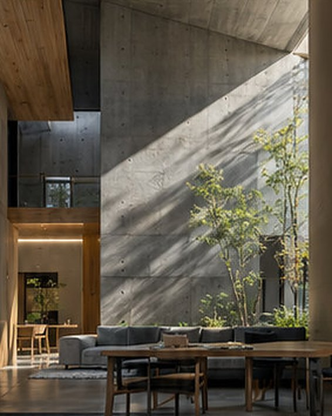
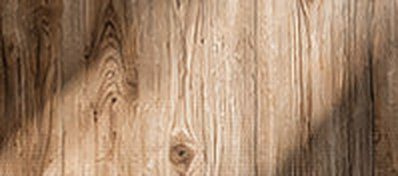
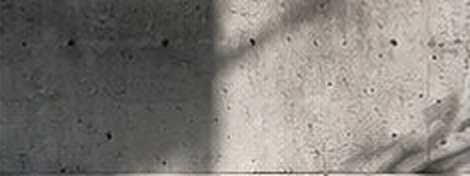
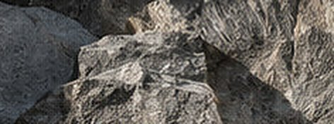

B-00
考え方
設計は、机の上より先に、敷地の上で始まります。何を見て、それを図面のどこに写しているのか。使う素材と、お引き受けしていない仕事のことまで、三枚にまとめました。
- 図番
- B-00
- 図面名
- 考え方
- 縮尺
- —
B-01
線を引く前に、敷地を読む。
図面を描きはじめる前に、敷地へ少なくとも四回通います。晴れた日の朝・正午・午後三時、それに雨の日を一度。
巻尺と方位磁石、脚立、それに折りたたみの椅子を持っていきます。食卓を置きそうな場所に椅子を置いて、しばらく座ってみるためです。
-
01
光
07:00 / 12:00 / 15:00
朝日がどこから入るか。冬の午後三時、南隣の家の影はどこまで伸びてくるか。影の先に杭を打ち、その位置を敷地図に写します。
日が当たる場所に居間を置くとは限りません。朝に日が欲しいのは台所と洗面で、午後の居間には、庭に当たった日の照り返しがあれば十分なことも多いからです。
- 見るもの
- 冬至前後の影の線、朝日が最初に届く地面
- 決まること
- 建物を寄せる向き、軒の出、窓の高さ
略図 01 冬至の影を敷地に写す -
02
風
夏 S–SW ／ 冬 N–NW
夏の夕方に風が抜けていく向きと、冬の北風がまともに当たる面を確かめます。細いリボンを結んだ竿を数か所に立て、同じ時刻に写真を撮ります。
風は入口だけでは流れません。入る窓と出る窓を、対角に、高さを変えて置きます。中庭は、その通り道のまんなかに置く「息つぎ」です。
- 見るもの
- 夏の夕方の風向き、冬の風が当たる壁
- 決まること
- 風の入口と出口、閉じる壁、中庭の位置
略図 02 入口と出口を対角に置く -
03
隣
h = 1,200 – 2,000
隣家の窓と勝手口、室外機、物干しの位置を測ります。こちらの食卓に座ったときの目の高さは、床からおよそ1,200mm。その目と隣の窓を結ぶ線を、断面図に引きます。
視線を切るのは、高い塀とは限りません。窓の下端を上げる、床を一段下げる、木を一本植える。いちばん小さな手で済む方法を選びます。
- 見るもの
- 隣家の窓の高さと向き、音や匂いの出る場所
- 決まること
- 窓の下端、塀の高さ、木を植える位置
略図 03 座った目の高さで線を引く -
04
道
門 → 玄関
門から玄関までの数歩。帰ってきたとき、最初に何が見えるかを決めます。道路から玄関の扉がまっすぐ見える配置は、できるだけ避けています。
一度だけ向きを変える。足もとの素材を一度だけ変える。それだけで、外の速さから家の速さへ切り替わります。敷地が小さくても、三歩あればつくれます。
- 見るもの
- 道路の幅と人通り、車の出入り、街灯の位置
- 決まること
- 門と玄関の位置、歩く向き、足もとの素材
略図 04 扉を道路から隠す


- 図番
- B-01
- 図面名
- 敷地を読む
- 縮尺
- 略図
B-02
年をとる素材を選ぶ。
新しいときがいちばんきれいな素材は、なるべく使いません。十年後の夕方に、どう見えるかで選びます。
使うのは、ほぼ三つです。それぞれが年月でどう変わり、どんな手入れが要るかを、先にお話しします。
-
W-1
木

傷も日焼けも、十年たつとその家の色になります。素足で歩く床と、見上げる軒の裏に。床は塗膜をつくらないオイル仕上げにして、傷んだところだけ直せるようにします。
使う場所 床・軒天・建具・造り付けの棚
木の年のとり方 時期 見え方 手入れ 竣工時 白っぽく、場所ごとに色の差がある 乾いた布で拭く 3年 日の当たる所から飴色に。家具の跡が残る 床にオイルを塗り直す 10年 全体が落ち着いた茶に。外の軒先は銀色がかる 外部の木部を点検、必要なら塗装 -
C-1
コンクリート

午前と午後で、同じ壁の表情が変わります。影を受けとめる面として、中庭のまわりに。家全体をコンクリートでつくることは少なく、塀や土間など、地面に近いところに使います。
使う場所 塀・土間・基礎の立ち上がり
コンクリートの年のとり方 時期 見え方 手入れ 竣工時 明るい灰色。型枠の板目がはっきり見える とくになし 3年 雨の筋がつきはじめる。北面にうっすら苔 気になる所だけ水洗い 10年 色が沈み、木や石となじむ 撥水材の塗り直し、ひび割れの点検 -
S-1
石

雨の日にいちばんきれいに見える素材です。濡れた色を、玄関までの足もとに。磨いた石は使わず、割ったままの肌か、のみで叩いた肌を選びます。濡れても滑りにくいからです。
使う場所 飛び石・中庭・玄関の土間
石の年のとり方 時期 見え方 手入れ 竣工時 角が立ち、割った面が白く粉をふく とくになし 3年 よく踏む所の角がとれ、色が深くなる 落ち葉を掃く 10年 目地に苔。庭の一部になる 沈んだ石があれば据え直す
※ 変化の出方は、日当たりや暮らし方によって変わります。竣工後は一年目・三年目・十年目にこちらから点検にうかがいます。
- 図番
- B-02
- 図面名
- 素材
- 縮尺
- 仕上表
B-03
しないことを、先に書く。
小さな事務所なので、できることは限られています。期待とちがっていた、ということが起きないように、お引き受けしていない仕事を先に書いておきます。
お引き受けしていないこと×
- 住宅以外の建物。店舗、事務所、集合住宅の設計はしていません。店舗を兼ねた住まいは、住まいが主であればご相談ください。
- 年に五軒以上。一年に設計を始めるのは三、四軒までです。時期によっては、着手まで数か月お待ちいただきます。
- 設計だけ、監理なし。図面どおりにできているかを現場で確かめるところまでが、設計の仕事だと考えています。
- 施工そのもの。工事は工務店がおこないます。私たちは建て主の側に立って、見積もりと工事を確かめます。
- 遠方の敷地。週に一度現場へ通えることが条件です。目安は、事務所から片道二時間までです。
- お急ぎの計画。相談から一年以内の入居は、ほとんどの場合むずかしいです。
- 図番
- B-03
- 図面名
- しないこと
- 縮尺
- —